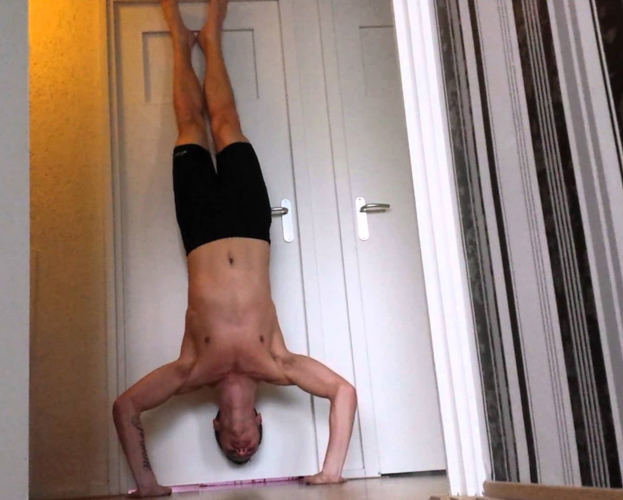
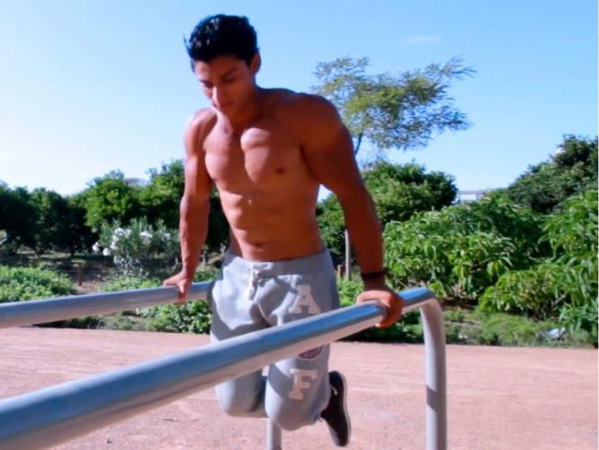
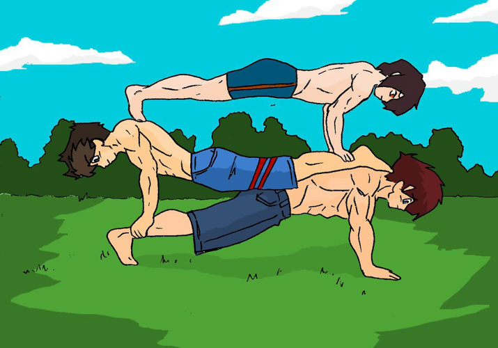
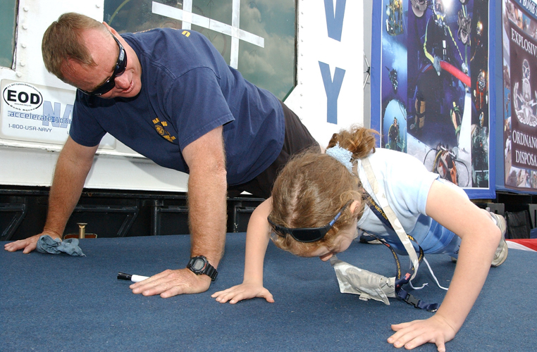

A category of exercises most of us are familiar with, mostly due to the ubiquitous nature of one specific exercise - the pushup. Pushing movements involve the ability to generate force to push something away from the body, and besides other muscle groups, pushing movements tend to develop strength in the chest and the rear of the arms, the triceps.
Like pulling exercise movements, pushing exercises can be categorised in two ways: vertical pushes and horizontal pushing motions
Vertical pushing
 A fundamental movement pattern, vertical pushing involves pushing something away from our body, either pushing it vertically overhead or in a downward plane of motion. Unlike vertical pulling, it is possible to use our bodyweight to exercise both types of vertical pushing.
Pushing overhead is practiced mainly through the handstand pushup, where from an inverted handstand position we then perform what is akin to a vertical pushup. The handstand pushup is the primary reason those practicing calisthenics for strength purposes will devote time to mastering the handstand. Do not be put off with all the talk of handstands, as there are numerous progressions that will help build towards a handstand pushup eventually.
The other type of vertical pushing is a longtime bodyweight staple, the dip. This is a movement where holding something with our two hands for support, we lower our body vertically and raise ourselves again.
Horizontal pushing
 Pushing from a horizontal body position, the pushup is the key exercise in this category and one the vast majority are familiar with. Like most other bodyweight exercises, the pushup may be surprisingly difficult when untrained, but like all other bodyweight movements there are a range of progressions that will lead to the pushup variation we are all familiar with.
Like most other bodyweight movement patterns, you will find a rich range of variations, and none more so than the pushup. Variations which manipulate the amount of our bodyweight we are pushing will be the main types of variations we will explore (ie progression steps), but many other variations exist and serve to manipulate what proportion of our chest, triceps and even shoulders that we are working with the movement.